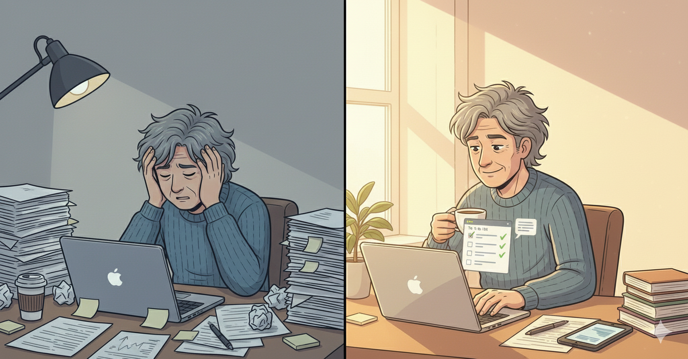
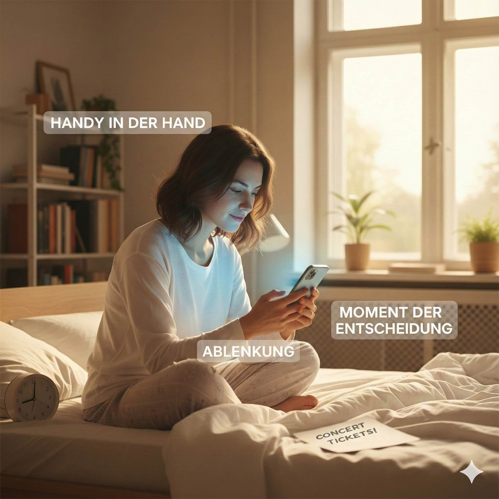
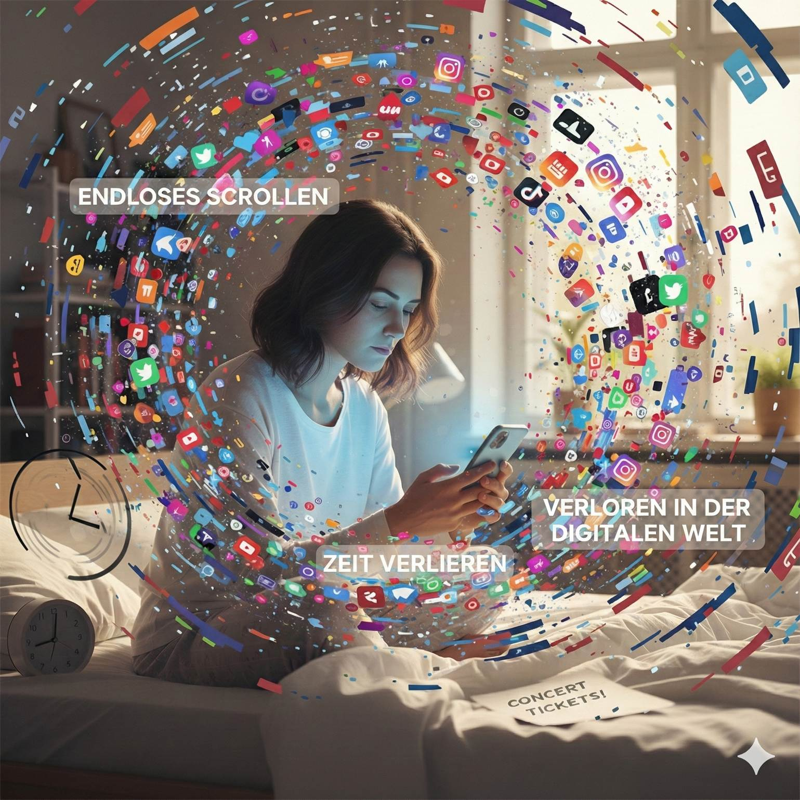
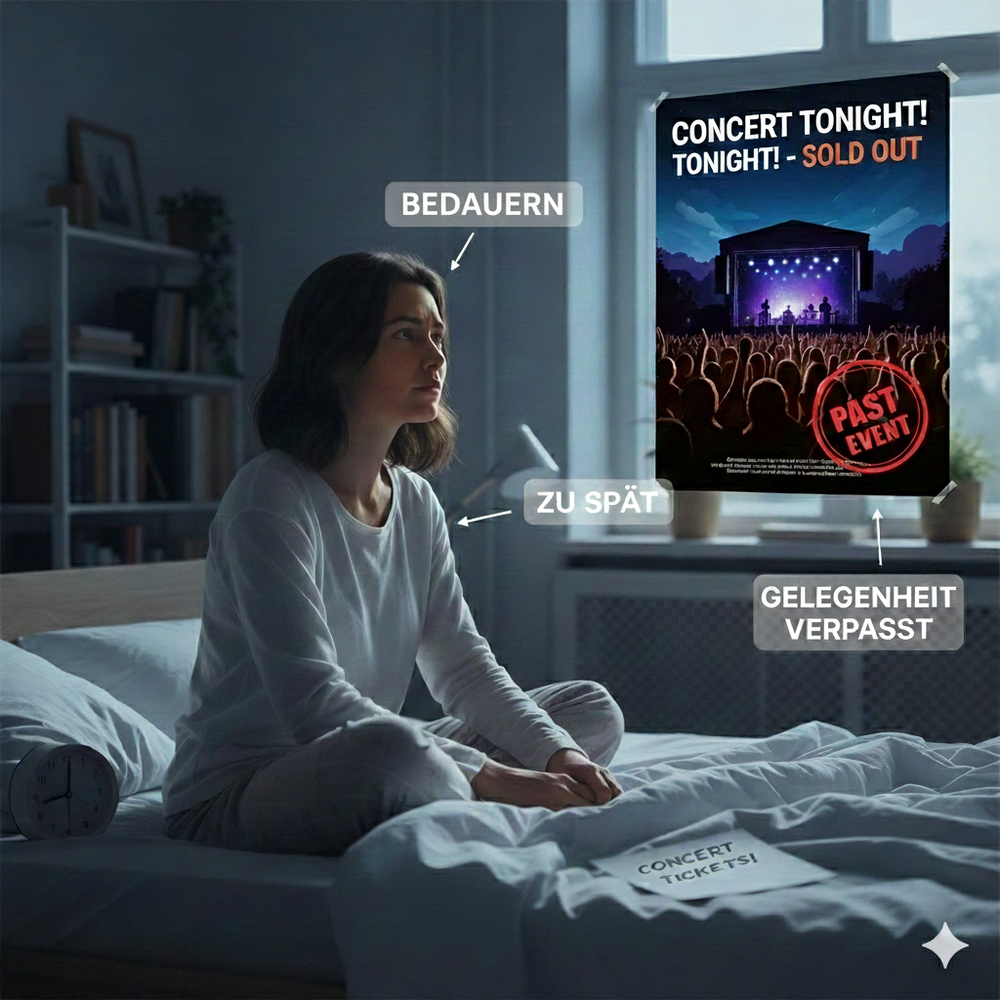

Wie könnte Ihre Erfolgsstory aussehen?
Inhalt
Vielleicht Ihre Geschichte in Bildern
Die kleine Erfolgsstory in acht Szenen
Haben Sie Lust auf Ihren eigenen entspannten Einstieg in KI?
Wie diese Bildergeschichte entstanden ist
Noch eine kleine Geschichte: Ablenkung & verpasste Chancen
Urheberrecht & Verwendungshinweis, KI-Transparenz
Vielleicht Ihre Geschichte in Bildern
Sie mögen in
dieser kleinen Bildergeschichte die eine oder andere vertraute Situation
entdecken:
Am Anfang steht Überforderung durch Schlagzeilen und KI-Hype, dazwischen die
Frage „Brauche ich das überhaupt?“ – und am Ende ein entspannter, souveräner
Umgang mit KI im eigenen Alltag.
Die gezeigte Person ist fiktiv, aber ihr Weg ist realistisch:
- von Unsicherheit zu Neugier,
- von „Ich verstehe das alles nicht“ zu „Ich probiere es Schritt für Schritt aus“,
- und schließlich zu „Ich kann jetzt sogar anderen beim Einstieg helfen“.
So könnte es aussehen, wenn Sie sich entscheiden, KI als Werkzeug und Lernchance zu betrachten – in Ihrem eigenen Tempo und mit Raum für Fragen.
Die kleine Erfolgsstory in acht Szenen
1) ‚KI REVOLUTION‘ hier, ‚KI ERSETZT JOBS? ‘ da – offenbar ist die Zukunft schon längst angekommen, nur meine Hirnsoftware hat noch kein Update bekommen. Bevor ich entscheide, ob ich begeistert oder panisch sein soll, bräuchte ich ehrlich gesagt erstmal eine verständliche Gebrauchsanleitung – idealerweise eine, die mein Nervensystem nicht gleich überfordert.
2) Ich scrolle durch meinen Newsfeed und bekomme gefühlt nur zwei Botschaften: Entweder rettet KI die Welt – oder sie frisst meinen Job zum Frühstück. In meinem Kopf steht jedenfalls: großes Fragezeichen, kleine Gewitterwolke und die Frage: ‚Nur Hype – oder bin ich die Einzige ohne Einweisung in dieses ganze KI-Chaos? ‘
3) Oh – zum ersten Mal seit Tagen sehe ich etwas über KI, das nicht nach Weltuntergang oder Wunderwaffe klingt: ‚INFO-SESSION: KI entspannt nutzen‘. Verständlich erklärt, praktisch ausprobiert … klingt fast so, als hätte jemand in meinen Kopf geschaut. Ein Teil von mir bleibt skeptisch – der andere denkt: Vielleicht ist das ja genau die Gebrauchsanleitung, nach der ich heimlich gesucht habe.
4) Ich sitze also tatsächlich in so einem KI-Workshop – und niemand lacht, wenn jemand fragt: ‚Was genau macht diese KI da eigentlich?‘ Statt Fachchinesisch gibt’s Glühbirnen, Sprechblasen und einfache Beispiele. Ich ertappe mich dabei, wie ich die Hand hebe und eine Frage stelle. Und das Überraschende: Es fühlt sich nicht peinlich an, sondern eher so, als würde mein Gehirn zum ersten Mal eine freundliche Einführung in ‚KI für Menschen ohne Superkräfte‘ bekommen.

5) Ich sitze abends am Schreibtisch, meine Notizen mit ‚Tipps & Prompts‘ neben mir, und teste zum ersten Mal allein diese KI aus. Auf dem Bildschirm steht freundlich: ‚Hallo! Wie kann ich helfen?‘ – und ich denke mir: ‚Na, fangen wir mal klein an, bevor wir die Welt retten.‘ Ich tippe meine ersten vorsichtigen Fragen ein – und merke: Das fühlt sich gar nicht nach Science-Fiction an, sondern eher wie ein ziemlich geduldiger Assistent, der mir tatsächlich Arbeit abnimmt. Ganz leise kommt der Gedanke: Vielleicht war meine Panik vor ein paar Tagen etwas… überdimensioniert.

6) Vor einer Woche hätte ich noch geschworen, dass KI nur etwas für Tech-Nerds und Großkonzerne ist. Jetzt sitze ich im Café, zeige meinen Freunden, wie mir das Ding Texte kürzt, Ideen sortiert und Mails vorformuliert – und wir lachen gemeinsam über eine besonders kreative Formulierung der KI. Irgendwie verrückt: Statt Angst, ‚abgehängt‘ zu werden, ertappe ich mich dabei, wie ich plötzlich erkläre, wie man den ersten Schritt mit KI macht.

7) Links (vorher): So sah mein Alltag früher aus – mein Schreibtisch als Mahnmal für ‚Irgendwas wollte ich doch noch erledigen…‘ und ich mittendrin, kurz davor, mir selbst eine Überlastungs-Mail zu schreiben. Rechts (nachher): dieselben Aufgaben, aber endlich sortiert, übersichtlich als To-do-Liste, daneben ein kleines KI-Chatfenster, das mir beim Strukturieren, Formulieren und Priorisieren hilft.
Fazit: Die KI hat mein Leben nicht übernommen – sie sorgt nur dafür, dass ich meinen Tee austrinken kann, bevor er kalt wird.

8) Neulich noch unter Zeitungen mit ‚KI REVOLUTION‘ vergraben, heute stehe ich hier mit meinem Tablet und erkläre anderen die ersten Schritte. Ich zeige, wie man Fragen stellt, Ergebnisse prüft und die KI als hilfreiches Werkzeug nutzt – ohne Hype, ohne Panik. Ganz ehrlich: Ich hätte nie gedacht, dass ich mal zu den Leuten gehöre, die sagen: ‚Probier’s einfach aus, ich zeig dir, wie du entspannt einsteigen kannst.‘ Und das Schönste: Die Zukunft fühlt sich plötzlich weniger nach Drohung und mehr nach Einladung an. 🙌
Haben Sie
Lust auf Ihren eigenen entspannten Einstieg in KI?
Wenn Sie sich in Teilen dieser Geschichte wiederfinden – zwischen
Informationsflut, Skepsis und vorsichtiger Neugier – dann könnten meine
KI-Sessions ein passender nächster Schritt für Sie sein.
Dort haben Sie die Gelegenheit,
- KI in Ruhe auszuprobieren,
- Ihre eigenen Fragen zu stellen und
- konkrete Anwendungsfälle aus Ihrem Alltag zu testen – ohne Fachjargon, ohne Hype.
Haben Sie Interesse? 👉 Halten Sie nach Terminen Ausschau und melde Sie sich an 😉 (wird ergänzt)
Wie diese Bildergeschichte entstanden istDie Bildergeschichte ist selbst ein kleines Praxisbeispiel dafür, wie sich verschiedene KI-Werkzeuge sinnvoll kombinieren lassen.
Das Ergebnis sehen Sie hier: eine kleine „Vorher–Nachher“-Geschichte, die zeigt, wie aus Überforderung und Skepsis Neugier, Kompetenz und Gelassenheit im Umgang mit KI werden können – und gleichzeitig demonstriert, wie solche Inhalte heute mit Hilfe von KI-Werkzeugen entstehen. |
Noch eine kleine Geschichte: Ablenkung & verpasste Chancen
Vielleicht kommt Ihnen dieses Muster bekannt vor: Sie wachen ausgeschlafen auf, haben eine gute Idee oder einen klaren Vorsatz – und greifen „nur kurz“ zum Handy. Aus dem kurzen Blick werden Minuten, manchmal mehr. Nachrichten, Social Media, Meldungen, Links … und irgendwann ist die Zeit weg – und mit ihr die ursprüngliche Gelegenheit.
Diese kleine Bildergeschichte erzählt so einen Moment: vom guten Start in den Tag über den Sog des Smartphones bis zur Erkenntnis, dass ein Konzertbesuch an endlosem Scrollen gescheitert ist. Als freundliche Erinnerung daran, dass wir unsere Aufmerksamkeit bewusster lenken können.
Bild 1/4 – Die ursprüngliche Situation
Der Tag fängt eigentlich großartig an: Ich wache ausgeschlafen auf, der Kopf ist klar – und da ist sie, diese eine gute Idee: Heute buche ich endlich die Konzerttickets. Alles ist möglich, ich muss es nur kurz erledigen … eigentlich.

Bild 2 /4 – Der Moment der Entscheidung
Ich will nur eben das Handy nehmen, um die Tickets zu bestellen – ganz kurz. Im nächsten Moment scrolle ich schon durch Mails, News und Benachrichtigungen. Meine gute Idee sitzt brav daneben und schaut zu, wie meine Aufmerksamkeit im Autopilot-Modus auf ‚Nur noch schnell …‘ umschaltet.

Bild 3/4 – Der Verlust der Zeit
Und dann passiert es wieder: Endloses Scrollen. Um mich herum ein bunter Wirbel aus Apps, News und Clips – und irgendwo darin verschwinden meine Zeit und meine ursprüngliche Absicht. Ich bin komplett in der digitalen Welt versunken, während die echte Uhr im Hintergrund still und leise Überstunden macht.

Bild 4/4 – Die Erkenntnis
Als ich endlich den Blick vom Handy löse, ist es zu spät: Konzert ausverkauft, Gelegenheit verpasst. Auf dem Tisch liegt nur noch der Zettel mit der Erinnerung. In meinem Kopf sitzt das leise ‚Hättest du mal …‘ – und die Erkenntnis, dass nicht das Handy schuld ist, sondern meine Art, mich von ihm wegziehen zu lassen.
|
Hinweis zu den Bildern Die Bilder wurden ursprünglich mit einer älteren Gemini-Version erstellt und enthielten Schreibfehler. Diese habe ich später mit der aktuellen Version korrigiert (Gemini 3 Pro mit integriertem Bild-Tool; bei kostenlosen Accounts ist das Kontingent begrenzt). Für die Korrekturen waren mehrere Anläufe nötig; dadurch hat die Bildqualität gegenüber der ersten Version teils deutlich nachgelassen. Generative Bild-Tools haben zudem weiterhin Schwierigkeiten mit deutschsprachigem Text – auch wenn es besser geworden ist. Im ersten Bild habe ich schließlich die Texte entfernen lassen. Tipp: Im Zweifel Bilder ohne deutschen Text erzeugen lassen und Beschriftungen bei Bedarf nachträglich mit einem Bildbearbeitungsprogramm einfügen. Bei komplexeren Grafiken funktionieren Prompts außerdem oft besser auf Englisch (ggf. mit Hilfe eines Chatbots formulieren). Besonders missglücktes Beispiel (Bild 1): Aus „Möglichkeiten“ wurde „Möggiilitities“, eine deutsch/englische Mischung (Possibilities). |
Und was hat das mit KI zu tun?
KI kann die Ablenkung nicht für mich abschaffen – aber sie kann mir helfen,
- klarer zu planen
- mir Muster zu veranschaulichen, sodass sich Aufmerksamkeit erhöht
- aus solchen Situationen kleine Lern- oder Reflexionsgeschichten zu machen
So wird KI zu einem Werkzeug, das mir hilft, meine Zeit und Aufmerksamkeit bewusster einzusetzen.
Urheberrecht & Verwendungshinweis, KI-Transparenz
© Franz Jankowski 2025. Alle Rechte vorbehalten.
Diese Unterlagen sind urheberrechtlich geschützt und ausschließlich für den persönlichen, nicht-kommerziellen Gebrauch bestimmt. Jegliche Vervielfältigung oder Weitergabe von Kopien der Inhalte sowie jede kommerzielle Nutzung – ganz oder teilweise – bedürfen meiner vorherigen schriftlichen Zustimmung. Gesetzliche Schranken (z. B. Zitatrecht) bleiben unberührt. Das bloße Verlinken auf diese Seite ist erlaubt.
Zur KI-Transparenz siehe hier.
Version: v0.8 – Stand: 13.12.2025